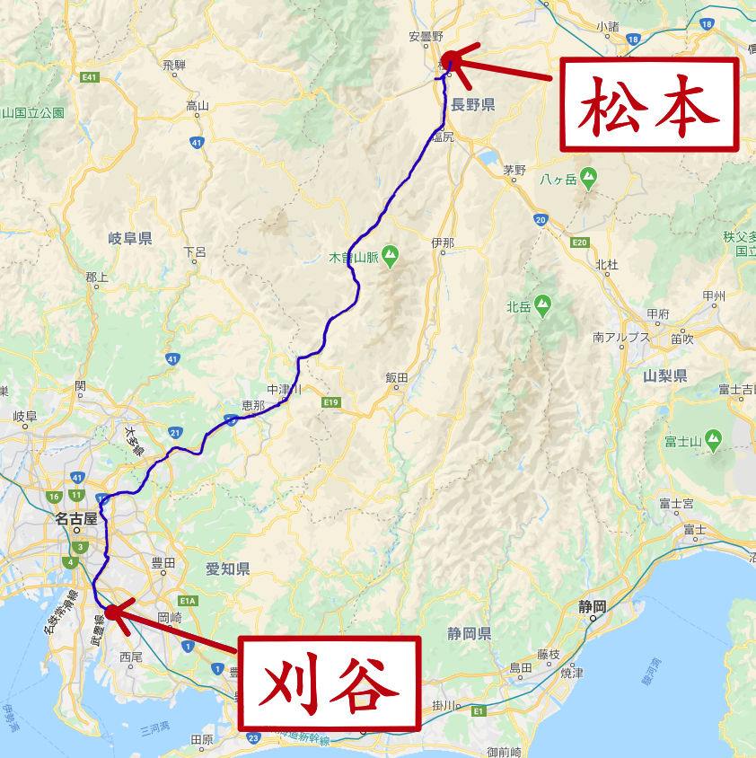
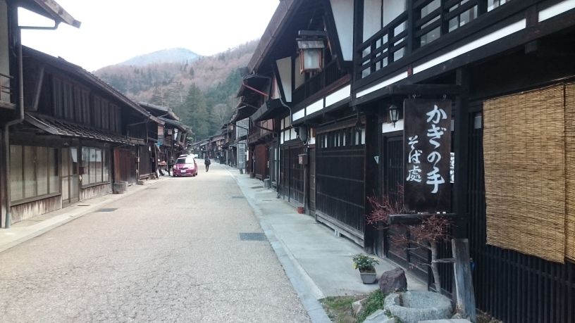

刈谷-松本サイクリングページ
サイクリングの経緯について
- 
- ↑刈谷-松本の経路
今回のサイクリングは，刈谷から，松本へと，信大に入る前にママチャリを運び出すという目的のもと，約230kmのサイクリングを行った。出発したのは，いろいろと事情があって，3月18日の21時ほどであったが，装備が大変貧弱であったため，途中でさまざまな困難に見舞われた。その結果，松本についたのは，3日後の18時くらいであり，実質的には，1日と21時間で松本まで到達している。以後，下宿先に自転車を置いた後，丁度土日でスキー帰りの友達の車に乗せてもらおうと，翌日3月22日木曽福島まで電車(JR中央線)に乗って行き，都合上明日に友達がそこを通過することが判明したため，1晩を木曽福島で明かし，翌日観光をしたうえで，午後4時に木曽福島を離れたのである。以上の5日間の行程のもと，今回のサイクリングが行われたのだが，実のところ一切用意をしていない状態で家を飛び出してきたため，4泊分は外で明かすことになったのである。
1日目【刈谷→名古屋】
道路の上での経路を説明すると，刈谷から名古屋までは，地図すら持っていなかったため，以前の感覚と記憶を頼って西へと進んだ。その結果，松本に行くのであれば，中央線に沿っていけば良いのだと思い，ある程度西に行ったら，そのまま北に進むことで，春日井や高蔵寺あたりに繋がるであろうとの，地理的感覚のもと，実行していった。結果的に名古屋市に入ったあたりで，早速パンクしたため，3時間ほど歩き続けたのち，近くの公園で，仮眠を取ることとなったのである。
2日目【名古屋→春日井→多治見→土岐→瑞浪→恵那→中津川】
装備がほとんどないことは，申し上げた通りであるが，所持品に関しては，リュックサックとタブレット，本くらいしか入っていなかったため，近くのイオンモールの空く時間までひたすら時間をつぶして，空いた途端に，地図と寒さ対策のためのバスタオル(新生活用に汎用性が高いため)，また桶と自転車空気入れ，スポーツドリンクを購入した。これによって，自転車のパンクを修理することができるようになったため，公園にて早速修理をし，出発したのが10:30であった。なお，食事については，消費金額を抑えるため，コンビニでペヤングを購入したが，230円くらいなのに対して1000kcalあることから，大変値段対エネルギーが高いことが分かった。こうしてママチャリをひたすらこぎ続け，春日井:11:30，多治見:13:20，土岐:14:00，瑞浪:15:00，中津川:19:30といった具合に通過していった。途中，恵那のあたりでパンクしたが，何とか水を借りて，修理することができた。雰囲気としては，春日井を過ぎたあたりから，徐々に山景色となってきて，勾配もきつくなっていった。道路としては，基本的には，中央線に近いところを見失わないように走っていったが，土岐のあたりから，国道19号繊が主な道路となり始め，南木曾に入ることには，そこから先はずっとこの道を進んでいくこととなった。体力的な面に関しては，勾配で徐々に体力が奪われてはいくものの，ただひたすら漕ぎ続けるしかなく，きついところでは，度々休みながら進んでいった。平均速度を標識から推測すると，まだまだこのあたりでは13km/hくらいは出ているようであった。
3日目【中津川→南木曾→大桑→上松→木曽→木祖→塩尻→松本】
中津川で一晩明かそうと思ったが，あいにく雨が降り，かなり冷え込んでいたため，ほとんど寝れなかった。結果的に交通量が少なく快適なライドが可能な深夜のうちに出発することにした。中津川を出たのが2:00であり，ひたすら19号線を行くこと3時間，少しずつ明るくなっていく中，やっとのことで，南木曾のコンビニにたどり着くことができたのである。これから先においては，勾配がただただひたすら急なまま続くため，かなりペースが落ち込むこともあった。休み休みこぎ続けて，平均速度8km/h近くまで落ち込むこともあった。看板を見ると，塩尻まで1000kmという絶望的な数字，一つ一つの市町村を超えるだけでも大変なものであった。さらには，店の数がかなり減ってきて，頼りのコンビニですら，15kmおきにあるかのような絶望感であった。そんな中漕ぐ続けて，大桑:7:30，上松:9:00，木曽福島:11:30と来たところで，雪が降るとともに3度目のパンクが発生した。歩き続けて道の駅で修理して，塩尻を通過したのが，17:00，松本についたのが，18:00であった。途中においては，標高が1000m近くに達するところもあり，そこから下って来るため，木祖からは多少楽ができたが，歩道があるかすら怪しい道路もあり，隣で自動車が勢いよく走る中，自転車で走り抜けなくてはならないところがあった。そして，松本についてからは，公園で休むために，安曇野の方へと向かったが，途中で4度目のパンクをし，さらには，外気も氷点下近くまで冷え込んでいたことから，かなりの苦難が強いられた。
4日目【松本→木曽福島】
とうとう松本に着き，早朝朝冷え込んでいて，あまり眠れなかったことから，5時に早速活動開始して，松本城や旧開智学校の見学を行った。そして，あがたの森公園で，日が上がって温度が多少高くなるのを待ってから，下宿先への自転車輸送という任務を完了し，篠ノ井線と中央線で木曽福島へと15:00くらいに到着した。木曽福島には初めて訪れるが，駅前へ出ると，昔ながらの大変美しい光景が広がっていた。歩いてみると，坂が多くてしんどかったが，足湯があったり，木曽川の流れを観察できたり，昔ながらの街並みが残されている街道をめぐったりすることができた。さらに，高山方面へと19号線から分かれるところの道へと入って歩くこと30分，せせらぎの四季という日帰り温泉に訪れることができ，旅の疲れを癒すことができたりと，これまた最高なものであった。ちなみに，ここで買い物をしようと思うと，スーパーがすぐに見つかる訳ではないため，何かと苦労するのだが，何とこの木曽福島にはイオンがあるのである。試しに入って見ると，イオンとは思えないような独特の店舗であったが，一応なんでも生活に必要そうなものは揃っていた。また，夜には程よい街燈に，街並みが照らされ，これまた大変美しい光景が楽しめることから，是非とも一度は訪れていただきたいところでもある。しかし，当然といえば当然なのだが，友達が通過するのは明日の午後であることが判明したので，夜は冷えることで有名な木曽谷で1晩を明かすこととなってしまったのである。
5日目【木曽福島→帰宅】
- 
- ↑木曽の雰囲気と似ている奈良井宿
その年の4月に撮った
一晩が明け，さっそく朝から木曽福島観光をした。木曽福島駅から，木曽福島道の駅へと歩いていくことを試み，さらには，その道の駅から見える大きな神社へと歩いて行くことにした。しかし，当然普通は歩いていくような距離ではなく，5kmくらいは当たり前のようにあることから，1,2時間かけて，やっと駅からたどり着いたのである。さらに，そこから神社まで行こうと思うと，45分くらいかかることになり，途中経路では上松にまで入ってしまった。行ってみるとかなり立派な神社であり，そこで賽銭をしたのち，帰りは，木曽川にかけられていた，小さな橋を渡って帰ったのだが，これまた迫力のある光景であった。そうこうして時間をつぶし，スキー帰りの友達に拾ってもらって，波乱万丈な旅は終了したのである。
残念ながら写真を撮ることはなかったのだが，それだと，味気ない記事となってしまうので，木曽について紹介する。今回の旅で紹介した，中津川，木曽，奈良井(塩尻市)は，旧中山道の宿場町としての歴史があり，観光名所として有名である。また，木曽に関しては，大変自然豊かで美しい光景が広がっているため，是非とも皆さんにはご覧いただきたいものである。そこで，今回画像を用意出来なかった代わりに，私が気に入っている鉄道系YouTuberである，スーツさんの動画をご紹介しようと思う。以下のリンクが木曽路について紹介している動画である。